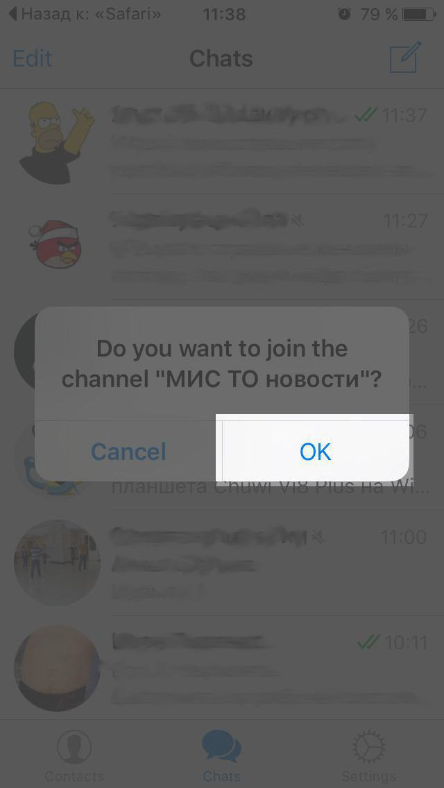
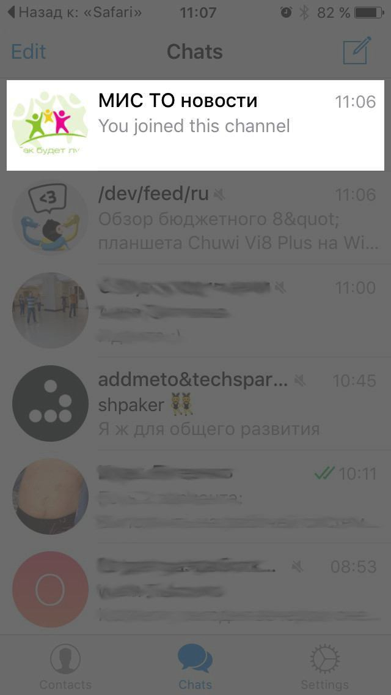

Инструкция для Android по подключению к каналу «МИС ТО новости» в Telegram
Установите Telegram. Для этого:
1. Запустите «Play Маркет»

2. В строке поиска введите «telegram»

3. В списке найденных программ выберите «Telegram»

4. В открывшемся окне нажмите кнопку «Установить»

5. Нажмите «Принять» и дождитесь установки программы

На этом установка мессенджера Telegram закончена.
Зарегистрируйтесь в Telegram. Для этого:
1. Запустите Telegram

2. Нажмите кнопку «START MESSAGING»

3. Введите свой номер телефона

4. Введите проверочный код из СМС

Если СМС с кодом подтверждения не пришло в течении 2-ух минут, вам позвонит автодозвонщик и продиктует код подтверждения. На этом регистрация в мессенджере Telegram закончена.
Подключитесь к каналу «МИС ТО новости». Для этого:
1. Откройте браузер, которым привыкли пользоваться, например «google chrome»

2. Введите в адресной строке адрес - http://em70.ru/mis/

3. На открывшейся странице нажмите кнопку «JOIN GROUP»

4. На вопрос о вступлении в группу ответьте утвердительно

5. В итоге, в списке чатов должна появиться группа «МИС ТО новости»

Примечание. Данная группа доступна только для чтения.
Инструкция для IOS по подключению к каналу «МИС ТО новости» в Telegram
Установите Telegram. Для этого:
1. Запустите «App Store»

2. В строке поиска введите «telegram»

3. В списке найденных программ напротив «Telegram Messenger» нажмите пиктограмму

Примечание. Данная группа доступна только для чтения.
Подключитесь к каналу «МИС ТО новости». Для этого:
1. Откройте браузер, которым привыкли пользоваться, например «google chrome»

2. Введите в адресной строке адрес - http://em70.ru/mis

3. На открывшейся странице нажмите кнопку «Открыть»

Подключитесь к каналу «МИС ТО новости». Для этого:
3. Введите свой номер телефона

Если СМС с кодом подтверждения не пришло в течении 2-ух минут, вам позвонит автодозвонщик и продиктует код подтверждения. На этом регистрация в мессенджере Telegram закончена.
Подключитесь к каналу «МИС ТО новости». Для этого:
1. Откройте браузер, которым привыкли пользоваться, например «Safari»

2. Введите в адресной строке адрес - http://em70.ru/mis/

3. На открывшейся странице нажмите кнопку «Открыть»

4. На вопрос о вступлении в группу ответьте утвердительно
5. В итоге, в списке чатов должна появиться группа «МИС ТО новости»
Примечание. Данная группа доступна только для чтения.